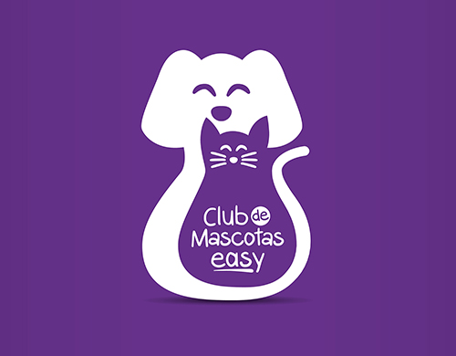
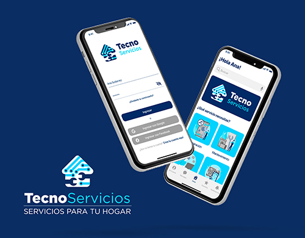
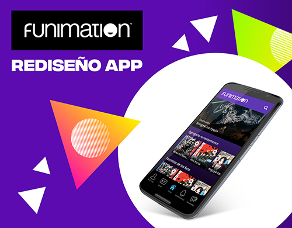

Portafolio
Estos son algunos de los trabajos destacados en mi carrera laboral y académica.

Club Mascotas
En este trabajo se realizó una propuesta visual para el Club Mascotas de easy. Que incluyó la creación del logo, varias piezas impresas y una app para acceder a los beneficios del Club.
Tecnoservicios
Este fue el proyecto final del Curso Diseño UX/UI. Donde se presentó la investigación y propuesta visual de una app para solicitar servicios de reparaciones de electrodomésticos en el hogar.
Funimation
Este fue el proyecto final del Curso de Diseño UX/UI Avanzado. Realizando un rediseño de la app de funimation, con algunas mejoras basadas en la experiencia de los usuarios.